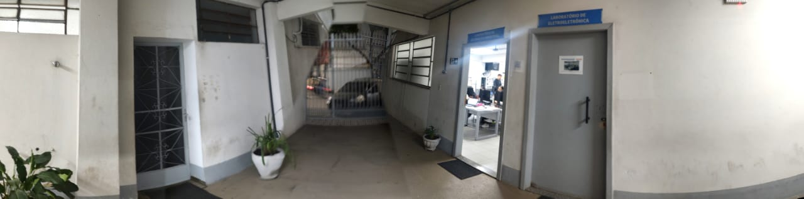

O gerenciamento das áreas externas do nosso grupo divide-se em setores estratégicos com funções bem definidas. Clique nos botões para explorar cada ambiente em modo imersivo 360°:

Área de Intervalo
Espaços reservados e calmos para o estudante sair da rotina da sala de aula, descansar a mente, ler ou estruturar ideias individualmente durante os intervalos.

Estacionamento / Pátio
Área logística estruturada que garante a segurança dos veículos de alunos, professores e visitantes, organizando o fluxo de chegada e saída da instituição. Também é reservado para fazer momentos cívicos onde a pedagogia apresenta novas informações e homenagens ao hino nacional.

Sanitário
Área de infraestrutura essencial, estruturada de forma limpa e organizada para atender as necessidades diárias de higiene e bem-estar de toda a comunidade escolar.